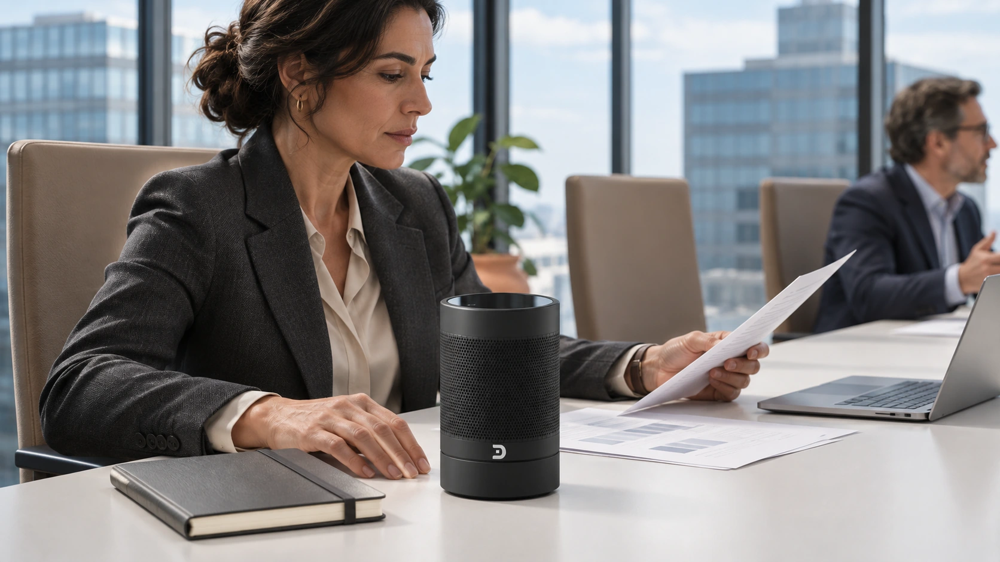
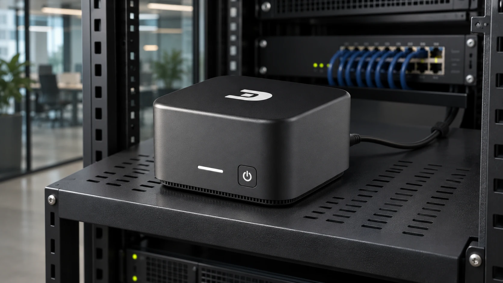
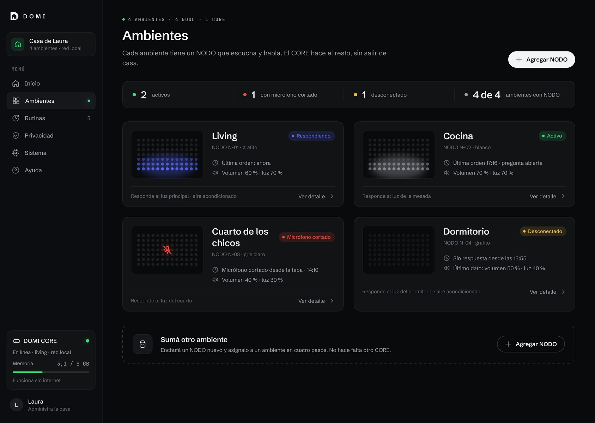
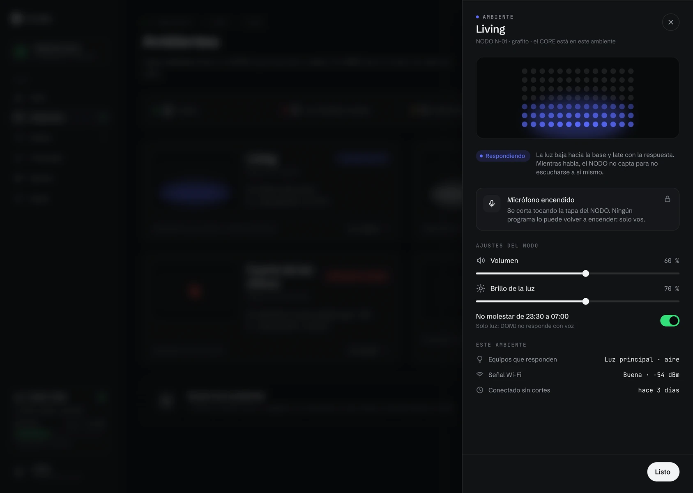
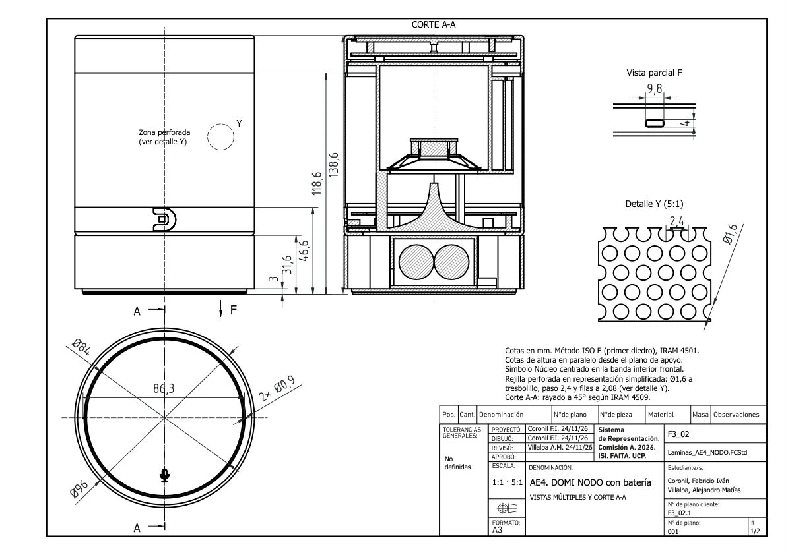
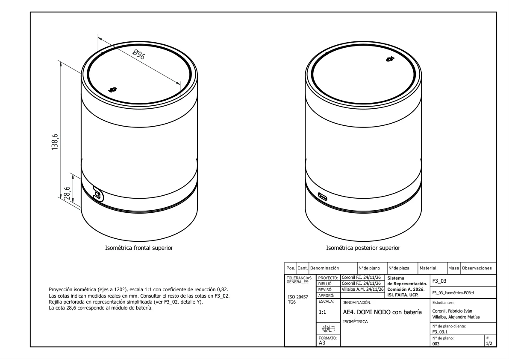
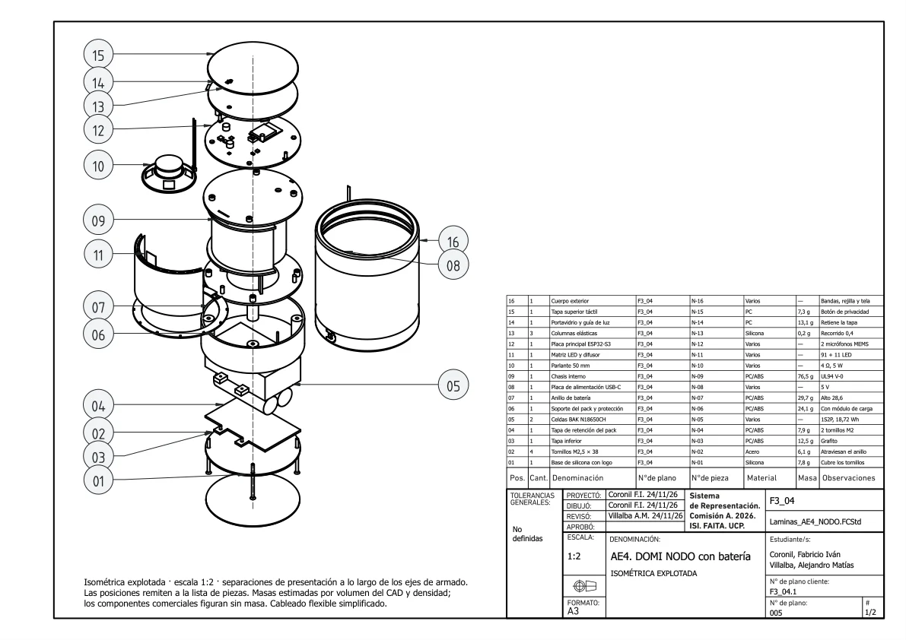
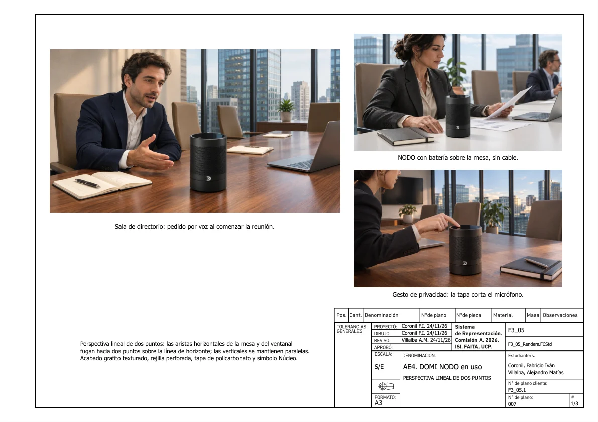
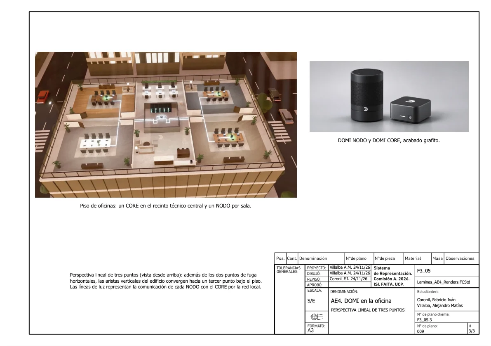

DOMI CORE
Una unidad central por sede, con AMD Ryzen 5 PRO 8640U y 8 GB de LPDDR5x. Procesa la voz de todas las salas en la red local.
US$ 449
Cargando la vista 3D 0 %
DOMI · Asistente de voz local para empresas
La voz de tus reuniones se procesa dentro de la red de tu empresa.

Problema
Encender la pantalla, ajustar las luces y revisar los equipos puede requerir distintos controles. Con varias salas, también importa saber qué equipos están activos y quién tiene el micrófono encendido.
Solución
El NODO recibe el pedido en la sala y el CORE coordina la acción por la red local. El panel reúne los estados de los ambientes y el diseño prevé un control del micrófono en la tapa del NODO.
DOMI NODO
Dos micrófonos, un parlante de 50 mm y luz en la parte baja de la rejilla. La batería recargable te permite ubicarlo donde lo necesites.
Luz de estado

Privacidad
Toda la tapa es un botón. Al tocarla, el micrófono queda desconectado y el ícono se pone rojo. Ningún programa lo puede volver a encender: solo vos.
Simulación: esta página no usa tu micrófono.
DOMI CORE
El CORE del AE4 incorpora al diseño un AMD Ryzen 5 PRO 8640U. Reconoce la voz, interpreta el pedido y prepara la respuesta dentro de la red de la empresa.
Instalación
El CORE se instala en un lugar fijo, ventilado y conectado a la red. Su entrada de alimentación USB-C PD está atrás.
Diseño
El aire entra por adelante y sale por atrás, a través de una base que parece flotar. Sin tornillos a la vista.
Diseño · NODO
El parlante está debajo de la rejilla y los micrófonos cerca de la tapa. El módulo de batería se aloja en la base.
Diseño · CORE
Ryzen 5 PRO, disipadores de aluminio y ventilación por la base en una caja de 115 × 105 × 60 mm.
Tocá una parte para conocerla.

Cómo funciona
Ejemplo · no usa tu micrófono
VosDOMI, ¿qué quedó pendiente de la reunión?
Entiendependientes · reunión
DOMIQuedó pendiente cerrar el presupuesto y confirmar la próxima reunión.
Terminaciones
Todo cierra por debajo: en el NODO, bajo la base de silicona; en el CORE, bajo el aro de goma.
Colores
El símbolo DOMI cambia de tono para destacarse sobre cada color.
DOMI NODO
El módulo inferior mide 28,6 mm de alto. La batería propuesta es de 18,72 Wh, con un objetivo de 4–6 horas de autonomía pendiente de ensayo.
Ver NODO en 3DPrecios y costos
Precios sugeridos de lanzamiento por unidad, sin impuestos ni instalación. El CORE se compra una vez por sede y cada sala nueva solo suma un NODO.
Una unidad central por sede, con AMD Ryzen 5 PRO 8640U y 8 GB de LPDDR5x. Procesa la voz de todas las salas en la red local.
US$ 449

Ø96 × 110 mm, alimentado por USB-C. Para salas donde el NODO queda fijo.
US$ 39

Ø96 × 138,6 mm, con dos celdas 18650 en el anillo inferior. Se mueve entre salas y se carga por USB-C.
US$ 59
Referencias de componentes de noviembre de 2026, sin cotización formal. La memoria es la parte que más aumentó en el último año. Catálogo EEBB · Ficha y precio DFRobot.
Especificaciones
Comparación de producto
Renders de uso
Perspectivas interiores ilustrativas basadas en las salas y el mobiliario del piso 12.




Demo de la aplicación
Probá cómo se agrega un NODO, se revisa el estado de cada micrófono y se administran las luces y rutinas por sala.
Abrir panel completo

Primero maquetamos el panel en Figma para el caso «Casa de Laura» del AE3. Ahí definimos la navegación, las tarjetas de ambientes y los estados de los dispositivos. Después desarrollamos el panel interactivo en HTML y JavaScript y lo adaptamos a la oficina del AE4.


Documentación técnica
Nueve láminas A3 dibujadas en FreeCAD TechDraw a partir de los modelos CAD finales, con el rótulo de la cátedra. Las vistas y las cotas están vinculadas a la geometría: si cambia una pieza, cambia la lámina.
CORE · ubicación de las vistas. La vista posterior estaba a la izquierda del frente, el lugar de la lateral derecha, y no respondía al sistema multivistas. Ahora el frente es la vista principal, la planta está debajo y la cara posterior es la vista F, referenciada con flecha.
NODO · sistema de cotas. La altura tenía una cadena de cotas parciales más la total, con información repetida. Ahora las alturas se acotan en paralelo desde el plano de apoyo y los diámetros, como el Ø84 de la tapa, se concentran en la planta.
Elegí una lámina para ver su PDF en esta página.

01 · NODO · Vistas múltiplesFrente, planta, corte A-A, vista parcial F, detalle Y y detalle Z · 1:1, 5:1 y 1:2 El corte A-A, en el lugar de la vista lateral izquierda, muestra el pack de dos celdas dentro del anillo. Las alturas se acotan en paralelo desde el plano de apoyo y los diámetros, en la planta. El detalle Z ubica los cuatro pasos Ø2,8 +0,2/0 del anillo en un patrón de 57,98 × 57,98 mm. 02 · CORE · Vistas múltiplesFrente, planta y vista F · 1:1
La planta va debajo del frente, como corresponde al método ISO E. La cara posterior con la entrada USB-C se dibuja como vista F, indicada con flecha y letra sobre la planta.
02 · CORE · Vistas múltiplesFrente, planta y vista F · 1:1
La planta va debajo del frente, como corresponde al método ISO E. La cara posterior con la entrada USB-C se dibuja como vista F, indicada con flecha y letra sobre la planta.

03 · NODO · IsométricasFrontal superior y posterior superior · 1:1 Proyección isométrica con ejes a 120°. Las cotas siguen los ejes isométricos e indican la medida real del NODO: Ø96, 138,6 y el módulo de batería de 28,6. 04 · CORE · IsométricasFrontal superior y posterior superior · 1:1
Las medidas generales 115 × 105 × 60 se acotan sobre las caras del CORE. La vista posterior muestra la entrada USB-C, acotada en la lámina 02.
04 · CORE · IsométricasFrontal superior y posterior superior · 1:1
Las medidas generales 115 × 105 × 60 se acotan sobre las caras del CORE. La vista posterior muestra la entrada USB-C, acotada en la lámina 02.

05 · NODO · Isométrica explotada16 posiciones y lista de piezas · 1:2 Las piezas se separan sobre el eje de armado, de la base de silicona a la tapa táctil. Cada globo remite a la lista con cantidad, material y masa estimada. 06 · CORE · Isométrica explotada13 posiciones y lista de piezas · 1:2
Se ve el interior: la placa con el Ryzen 5 PRO, los disipadores con sus tornillos con resorte, el ventilador, el panel frontal, la entrada USB-C y el cierre inferior.
06 · CORE · Isométrica explotada13 posiciones y lista de piezas · 1:2
Se ve el interior: la placa con el Ryzen 5 PRO, los disipadores con sus tornillos con resorte, el ventilador, el panel frontal, la entrada USB-C y el cierre inferior.

07 · NODO en usoPerspectiva lineal de dos puntos Renders en la sala de directorio, en finanzas y en operaciones. Las aristas de la mesa y del ventanal fugan hacia dos puntos sobre la línea de horizonte. 08 · CORE instaladoPerspectiva lineal de dos puntos
El CORE en el recinto técnico de la oficina. Visto en ángulo, se leen a la vez el frente, la cara superior con el símbolo y la base ventilada.
08 · CORE instaladoPerspectiva lineal de dos puntos
El CORE en el recinto técnico de la oficina. Visto en ángulo, se leen a la vez el frente, la cara superior con el símbolo y la base ventilada.

09 · DOMI en la oficinaPerspectiva lineal de tres puntos Vista desde arriba del piso: además de los dos puntos de fuga horizontales, las verticales convergen en un tercero. Muestra un CORE central y un NODO por sala.